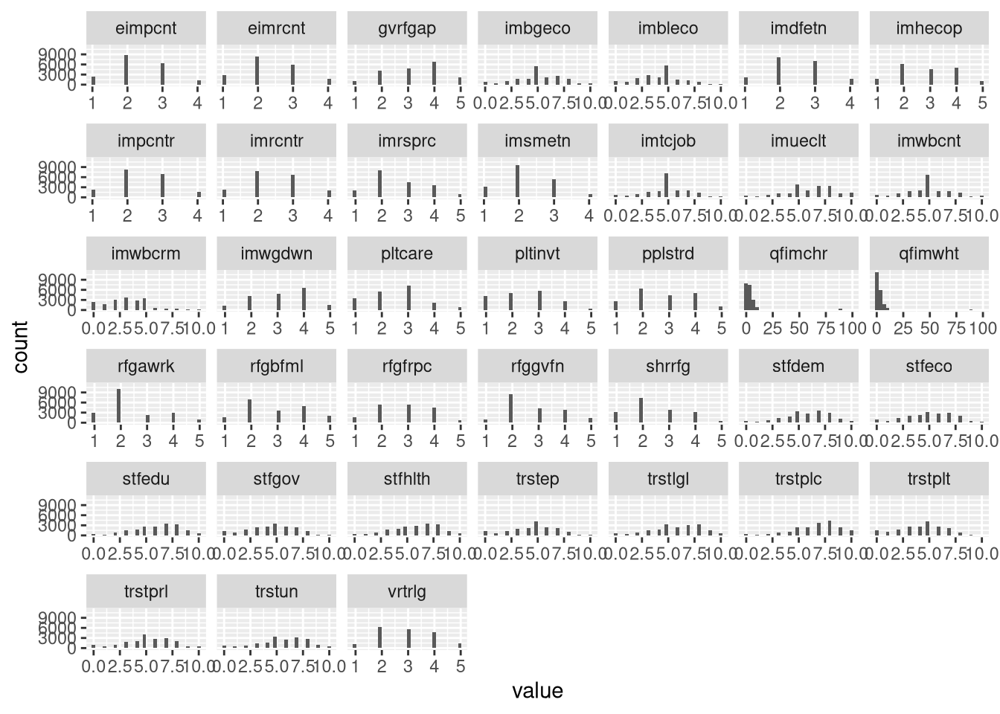

4.3 At-Home Exercises
In these exercises, you will attempt to replicate some of the analyses from the second reading for this week:
Kestilä, E. (2006). Is there demand for radical right populism in the Finnish electorate? Scandinavian Political Studies 29(3), 169–191.
The data for this practical were collected during the first round of the European Social Survey (ESS). The ESS is a repeated cross-sectional survey administered in 32 European countries. The first wave was collected in 2002, and two new waves have been collected each year since. You can find more info and access the data at https://www.europeansocialsurvey.org.
The data we will analyze for this practical are contained in the file named ESSround1-a.sav. This file contains data for all respondents, but only includes those variables that you will need to complete the following exercises.
4.3.1
Load the ESSround1-a.sav dataset into R.
- Inspect the data after loading to make sure everything went well.
Click to show code
## Load the 'haven' package:
library(haven)
library(tidySEM)
## Read the 'ESSround1-a.sav' data into a data frame called 'ess':
ess <- read_spss("ESSround1-a.sav")
## Inspect the result:
dim(ess)
head(ess)
descriptives(ess)## [1] 42359 50Click here for a description of the variables.
| Variable | Description |
|---|---|
| name | Title of dataset |
| essround | ESS round |
| edition | Edition |
| proddate | Production date |
| cntry | Country |
| idno | Respondent’s identification number |
| trstlgl | Trust in the legal system |
| trstplc | Trust in the police |
| trstun | Trust in the United Nations |
| trstep | Trust in the European Parliament |
| trstprl | Trust in country’s parliament |
| stfhlth | State of health services in country nowadays |
| stfedu | State of education in country nowadays |
| stfeco | How satisfied with present state of economy in country |
| stfgov | How satisfied with the national government |
| stfdem | How satisfied with the way democracy works in country |
| pltinvt | Politicians interested in votes rather than peoples opinions |
| pltcare | Politicians in general care what people like respondent think |
| trstplt | Trust in politicians |
| imsmetn | Allow many/few immigrants of same race/ethnic group as majority |
| imdfetn | Allow many/few immigrants of different race/ethnic group from majority |
| eimrcnt | Allow many/few immigrants from richer countries in Europe |
| eimpcnt | Allow many/few immigrants from poorer countries in Europe |
| imrcntr | Allow many/few immigrants from richer countries outside Europe |
| impcntr | Allow many/few immigrants from poorer countries outside Europe |
| qfimchr | Qualification for immigration: christian background |
| qfimwht | Qualification for immigration: be white |
| imwgdwn | Average wages/salaries generally brought down by immigrants |
| imhecop | Immigrants harm economic prospects of the poor more than the rich |
| imtcjob | Immigrants take jobs away in country or create new jobs |
| imbleco | Taxes and services: immigrants take out more than they put in or less |
| imbgeco | Immigration bad or good for country’s economy |
| imueclt | Country’s cultural life undermined or enriched by immigrants |
| imwbcnt | Immigrants make country worse or better place to live |
| imwbcrm | Immigrants make country’s crime problems worse or better |
| imrsprc | Richer countries should be responsible for accepting people from poorer countries |
| pplstrd | Better for a country if almost everyone share customs and traditions |
| vrtrlg | Better for a country if a variety of different religions |
| shrrfg | Country has more than its fair share of people applying refugee status |
| rfgawrk | People applying refugee status allowed to work while cases considered |
| gvrfgap | Government should be generous judging applications for refugee status |
| rfgfrpc | Most refugee applicants not in real fear of persecution own countries |
| rfggvfn | Financial support to refugee applicants while cases considered |
| rfgbfml | Granted refugees should be entitled to bring close family members |
| gndr | Gender |
| yrbrn | Year of birth |
| edulvl | Highest level of education |
| eduyrs | Years of full-time education completed |
| polintr | How interested in politics |
| lrscale | Placement on left right scale |
One thing you might notice when inspecting the ess data is that most of the
variables are stored as labelled vectors. When loading SPSS data, haven
will use these labelled vectors to preserve the metadata associated with SPSS
scale variables (i.e., variable labels and value labels).
While it’s good to have this metadata available, we want to analyze these items as numeric variables and factors, so the value labels are only going to make our lives harder. Thankfully, the labelled package contains many routines for manipulating labelled vectors.
We’ll deal with the numeric variables in just a bit, but our first task will be to covert grouping variables to factors.
4.3.2
Convert the cntry, gndr, edulvl, and polintr variables into factors.
- Use the
as_factor()function to do the conversion. - Convert
edulvlandpolintrto ordered factors.
Click to see code
The ess dataset contains much more information than Kestilä (2006) used.
Kestilä only analyzed data from the following ten countries:
- Austria
- Belgium
- Denmark
- Finland
- France
- Germany
- Italy
- Netherlands
- Norway
- Sweden
So, our next task is to subset the data to only the relevant population.
When we apply logical subsetting, we can select rows from a dataset based on logical conditions. In this case, we want to select only rows from the 10 countries listed above.
4.3.3
Subset the data to include only the 10 countries analyzed by Kestilä (2006).
- Inspect the subsetted data to check that everything went well.
Hints:
- Use the
%in%operator to create a logical vector that indicates which elements of thecntryvariable are in the set of target counties. - Use the
droplevels()levels function to clean up empty factor levels.
Click to show code
## Create a character vector naming the target countries:
targets <- c("Austria",
"Belgium",
"Denmark",
"Finland",
"France",
"Germany",
"Italy",
"Netherlands",
"Norway",
"Sweden")
## Select only those rows that come from a target country:
ess <- filter(ess, country %in% targets) %>% # Subset rows
droplevels() # Drop empty factor levels
## Inspect the result:
dim(ess)## [1] 19690 52##
## Austria Belgium Germany Denmark Finland France
## 2257 1899 2919 1506 2000 1503
## Italy Netherlands Norway Sweden
## 1207 2364 2036 1999In keeping with common practice, we will treat ordinal Likert-type rating scales with five or more levels as continuous. Since some R routines will treat labelled vectors as discrete variables, we can make things easier for ourselves by converting all the labelled vectors in our data to numeric vectors.
We can use the labelled::remove_val_labels() function to strip the value
labels and convert all of the labelled vectors to numeric vectors.
4.3.4
Convert the remaining labelled vectors to numeric vectors.
Click to see code
## If necessary, install the labelled package:
# install.packages("labelled", repos = "https://cloud.r-project.org")
## Load the labelled package:
library(labelled)
## Strip the value labels:
ess <- remove_val_labels(ess)
## Check the effects:
str(ess)## tibble [19,690 × 52] (S3: tbl_df/tbl/data.frame)
## $ name : chr [1:19690] "ESS1e06_1" "ESS1e06_1" "ESS1e06_1" "ESS1e06_1" ...
## ..- attr(*, "label")= chr "Title of dataset"
## ..- attr(*, "format.spss")= chr "A9"
## ..- attr(*, "display_width")= int 14
## $ essround: num [1:19690] 1 1 1 1 1 1 1 1 1 1 ...
## ..- attr(*, "label")= chr "ESS round"
## ..- attr(*, "format.spss")= chr "F2.0"
## ..- attr(*, "display_width")= int 10
## $ edition : chr [1:19690] "6.1" "6.1" "6.1" "6.1" ...
## ..- attr(*, "label")= chr "Edition"
## ..- attr(*, "format.spss")= chr "A3"
## ..- attr(*, "display_width")= int 9
## $ proddate: chr [1:19690] "03.10.2008" "03.10.2008" "03.10.2008" "03.10.2008" ...
## ..- attr(*, "label")= chr "Production date"
## ..- attr(*, "format.spss")= chr "A10"
## ..- attr(*, "display_width")= int 12
## $ cntry : num [1:19690] 1 18 1 1 18 1 2 18 1 18 ...
## ..- attr(*, "label")= chr "Country"
## ..- attr(*, "format.spss")= chr "F2.0"
## ..- attr(*, "display_width")= int 7
## $ idno : num [1:19690] 1 1 2 3 3 4 4 4 6 6 ...
## ..- attr(*, "label")= chr "Respondent's identification number"
## ..- attr(*, "format.spss")= chr "F9.0"
## ..- attr(*, "display_width")= int 11
## $ trstlgl : num [1:19690] 10 6 8 4 8 10 9 7 7 7 ...
## ..- attr(*, "label")= chr "Trust in the legal system"
## ..- attr(*, "format.spss")= chr "F2.0"
## ..- attr(*, "display_width")= int 9
## $ trstplc : num [1:19690] 10 8 5 8 8 9 8 9 4 9 ...
## ..- attr(*, "label")= chr "Trust in the police"
## ..- attr(*, "format.spss")= chr "F2.0"
## ..- attr(*, "display_width")= int 9
## $ trstun : num [1:19690] 9 8 6 NA 5 8 NA 7 5 7 ...
## ..- attr(*, "label")= chr "Trust in the United Nations"
## ..- attr(*, "format.spss")= chr "F2.0"
## $ trstep : num [1:19690] NA 3 0 7 3 7 0 3 4 6 ...
## ..- attr(*, "label")= chr "Trust in the European Parliament"
## ..- attr(*, "format.spss")= chr "F2.0"
## $ trstprl : num [1:19690] 9 7 0 6 8 8 10 2 6 8 ...
## ..- attr(*, "label")= chr "Trust in country's parliament"
## ..- attr(*, "format.spss")= chr "F2.0"
## ..- attr(*, "display_width")= int 9
## $ stfhlth : num [1:19690] 10 4 0 7 6 8 NA 6 3 5 ...
## ..- attr(*, "label")= chr "State of health services in country nowadays"
## ..- attr(*, "format.spss")= chr "F2.0"
## ..- attr(*, "display_width")= int 9
## $ stfedu : num [1:19690] 8 7 7 5 8 7 NA 7 6 7 ...
## ..- attr(*, "label")= chr "State of education in country nowadays"
## ..- attr(*, "format.spss")= chr "F2.0"
## $ stfeco : num [1:19690] 7 6 0 7 8 6 NA 9 8 9 ...
## ..- attr(*, "label")= chr "How satisfied with present state of economy in country"
## ..- attr(*, "format.spss")= chr "F2.0"
## $ stfgov : num [1:19690] 7 7 0 7 6 3 NA 5 5 7 ...
## ..- attr(*, "label")= chr "How satisfied with the national government"
## ..- attr(*, "format.spss")= chr "F2.0"
## $ stfdem : num [1:19690] 8 5 5 5 7 7 NA 7 7 9 ...
## ..- attr(*, "label")= chr "How satisfied with the way democracy works in country"
## ..- attr(*, "format.spss")= chr "F2.0"
## $ pltinvt : num [1:19690] 1 3 1 1 4 1 1 3 2 3 ...
## ..- attr(*, "label")= chr "Politicians interested in votes rather than peoples opinions"
## ..- attr(*, "format.spss")= chr "F1.0"
## ..- attr(*, "display_width")= int 9
## $ pltcare : num [1:19690] 1 4 1 1 4 3 2 5 2 3 ...
## ..- attr(*, "label")= chr "Politicians in general care what people like respondent think"
## ..- attr(*, "format.spss")= chr "F1.0"
## ..- attr(*, "display_width")= int 9
## $ trstplt : num [1:19690] 0 5 0 2 5 4 8 2 4 6 ...
## ..- attr(*, "label")= chr "Trust in politicians"
## ..- attr(*, "format.spss")= chr "F2.0"
## ..- attr(*, "display_width")= int 9
## $ imsmetn : num [1:19690] 4 3 2 3 2 1 NA 2 NA 1 ...
## ..- attr(*, "label")= chr "Allow many/few immigrants of same race/ethnic group as majority"
## ..- attr(*, "format.spss")= chr "F1.0"
## ..- attr(*, "display_width")= int 9
## $ imdfetn : num [1:19690] 3 3 2 3 2 2 NA 2 NA 1 ...
## ..- attr(*, "label")= chr "Allow many/few immigrants of different race/ethnic group from majority"
## ..- attr(*, "format.spss")= chr "F1.0"
## ..- attr(*, "display_width")= int 9
## $ eimrcnt : num [1:19690] 4 2 2 2 3 1 NA 2 NA 1 ...
## ..- attr(*, "label")= chr "Allow many/few immigrants from richer countries in Europe"
## ..- attr(*, "format.spss")= chr "F1.0"
## ..- attr(*, "display_width")= int 9
## $ eimpcnt : num [1:19690] 3 2 2 2 2 2 NA 2 NA 1 ...
## ..- attr(*, "label")= chr "Allow many/few immigrants from poorer countries in Europe"
## ..- attr(*, "format.spss")= chr "F1.0"
## ..- attr(*, "display_width")= int 9
## $ imrcntr : num [1:19690] 3 3 2 2 2 1 NA 2 NA 2 ...
## ..- attr(*, "label")= chr "Allow many/few immigrants from richer countries outside Europe"
## ..- attr(*, "format.spss")= chr "F1.0"
## ..- attr(*, "display_width")= int 9
## $ impcntr : num [1:19690] 3 2 2 3 2 1 NA 2 NA 2 ...
## ..- attr(*, "label")= chr "Allow many/few immigrants from poorer countries outside Europe"
## ..- attr(*, "format.spss")= chr "F1.0"
## ..- attr(*, "display_width")= int 9
## $ qfimchr : num [1:19690] 4 2 0 6 2 0 99 0 1 2 ...
## ..- attr(*, "label")= chr "Qualification for immigration: christian background"
## ..- attr(*, "format.spss")= chr "F2.0"
## ..- attr(*, "display_width")= int 9
## $ qfimwht : num [1:19690] 1 0 0 0 0 0 99 0 0 1 ...
## ..- attr(*, "label")= chr "Qualification for immigration: be white"
## ..- attr(*, "format.spss")= chr "F2.0"
## ..- attr(*, "display_width")= int 9
## $ imwgdwn : num [1:19690] 3 4 2 2 3 3 NA 4 NA 4 ...
## ..- attr(*, "label")= chr "Average wages/salaries generally brought down by immigrants"
## ..- attr(*, "format.spss")= chr "F1.0"
## ..- attr(*, "display_width")= int 9
## $ imhecop : num [1:19690] 2 2 1 4 3 2 NA 3 NA 2 ...
## ..- attr(*, "label")= chr "Immigrants harm economic prospects of the poor more than the rich"
## ..- attr(*, "format.spss")= chr "F1.0"
## ..- attr(*, "display_width")= int 9
## $ imtcjob : num [1:19690] 7 5 6 5 7 10 NA 8 NA 4 ...
## ..- attr(*, "label")= chr "Immigrants take jobs away in country or create new jobs"
## ..- attr(*, "format.spss")= chr "F2.0"
## ..- attr(*, "display_width")= int 9
## $ imbleco : num [1:19690] 9 4 2 NA 3 10 NA 9 NA 6 ...
## ..- attr(*, "label")= chr "Taxes and services: immigrants take out more than they put in or less"
## ..- attr(*, "format.spss")= chr "F2.0"
## ..- attr(*, "display_width")= int 9
## $ imbgeco : num [1:19690] 4 3 10 7 5 10 NA 8 NA 5 ...
## ..- attr(*, "label")= chr "Immigration bad or good for country's economy"
## ..- attr(*, "format.spss")= chr "F2.0"
## ..- attr(*, "display_width")= int 9
## $ imueclt : num [1:19690] 9 4 10 5 4 10 NA 9 NA 3 ...
## ..- attr(*, "label")= chr "Country's cultural life undermined or enriched by immigrants"
## ..- attr(*, "format.spss")= chr "F2.0"
## ..- attr(*, "display_width")= int 9
## $ imwbcnt : num [1:19690] 7 3 5 5 5 10 NA 8 NA 5 ...
## ..- attr(*, "label")= chr "Immigrants make country worse or better place to live"
## ..- attr(*, "format.spss")= chr "F2.0"
## ..- attr(*, "display_width")= int 9
## $ imwbcrm : num [1:19690] 3 3 5 2 3 5 NA 5 NA 3 ...
## ..- attr(*, "label")= chr "Immigrants make country's crime problems worse or better"
## ..- attr(*, "format.spss")= chr "F2.0"
## ..- attr(*, "display_width")= int 9
## $ imrsprc : num [1:19690] 2 2 1 4 1 2 NA 1 1 3 ...
## ..- attr(*, "label")= chr "Richer countries should be responsible for accepting people from poorer countries"
## ..- attr(*, "format.spss")= chr "F1.0"
## ..- attr(*, "display_width")= int 9
## $ pplstrd : num [1:19690] 2 4 2 2 3 4 NA 4 4 2 ...
## ..- attr(*, "label")= chr "Better for a country if almost everyone share customs and traditions"
## ..- attr(*, "format.spss")= chr "F1.0"
## ..- attr(*, "display_width")= int 9
## $ vrtrlg : num [1:19690] 3 5 3 2 4 1 NA 4 2 3 ...
## ..- attr(*, "label")= chr "Better for a country if a variety of different religions"
## ..- attr(*, "format.spss")= chr "F1.0"
## $ shrrfg : num [1:19690] 3 2 1 1 3 3 NA 3 4 3 ...
## ..- attr(*, "label")= chr "Country has more than its fair share of people applying refugee status"
## ..- attr(*, "format.spss")= chr "F1.0"
## $ rfgawrk : num [1:19690] 2 2 1 2 2 2 NA 2 1 2 ...
## ..- attr(*, "label")= chr "People applying refugee status allowed to work while cases considered"
## ..- attr(*, "format.spss")= chr "F1.0"
## ..- attr(*, "display_width")= int 9
## $ gvrfgap : num [1:19690] 4 3 2 4 2 2 NA 3 2 4 ...
## ..- attr(*, "label")= chr "Government should be generous judging applications for refugee status"
## ..- attr(*, "format.spss")= chr "F1.0"
## ..- attr(*, "display_width")= int 9
## $ rfgfrpc : num [1:19690] 4 3 2 4 4 4 NA 4 3 4 ...
## ..- attr(*, "label")= chr "Most refugee applicants not in real fear of persecution own countries"
## ..- attr(*, "format.spss")= chr "F1.0"
## ..- attr(*, "display_width")= int 9
## $ rfggvfn : num [1:19690] 2 3 2 4 3 2 NA 2 2 2 ...
## ..- attr(*, "label")= chr "Financial support to refugee applicants while cases considered"
## ..- attr(*, "format.spss")= chr "F1.0"
## ..- attr(*, "display_width")= int 9
## $ rfgbfml : num [1:19690] 2 3 1 2 2 1 NA 4 2 3 ...
## ..- attr(*, "label")= chr "Granted refugees should be entitled to bring close family members"
## ..- attr(*, "format.spss")= chr "F1.0"
## ..- attr(*, "display_width")= int 9
## $ gndr : num [1:19690] 1 2 1 2 2 1 NA 2 2 1 ...
## ..- attr(*, "label")= chr "Gender"
## ..- attr(*, "format.spss")= chr "F1.0"
## ..- attr(*, "display_width")= int 6
## $ yrbrn : num [1:19690] 1949 1978 1953 1940 1964 ...
## ..- attr(*, "label")= chr "Year of birth"
## ..- attr(*, "format.spss")= chr "F4.0"
## ..- attr(*, "display_width")= int 7
## $ edulvl : Ord.factor w/ 7 levels "Not completed primary education"<..: NA 4 NA NA 4 NA NA 7 NA 6 ...
## $ eduyrs : num [1:19690] 11 16 14 9 12 18 NA 17 15 17 ...
## ..- attr(*, "label")= chr "Years of full-time education completed"
## ..- attr(*, "format.spss")= chr "F2.0"
## $ polintr : Ord.factor w/ 4 levels "Very interested"<..: 3 3 1 2 3 2 1 4 3 3 ...
## $ lrscale : num [1:19690] 6 7 6 5 8 5 NA 8 5 7 ...
## ..- attr(*, "label")= chr "Placement on left right scale"
## ..- attr(*, "format.spss")= chr "F2.0"
## ..- attr(*, "display_width")= int 9
## $ country : Factor w/ 10 levels "Austria","Belgium",..: 1 9 1 1 9 1 2 9 1 9 ...
## $ sex : Factor w/ 2 levels "Male","Female": 1 2 1 2 2 1 NA 2 2 1 ...Click for explanation
Note that the numeric variables are now simple numeric vectors, but the
variable labels have been retained as column attributes (which is probably
useful). If we want to completely nuke the labelling information, we can use the
labelled::remove_labels() function to do so.
In addition to screening with summary statistics, we can also visualize the variables’ distributions. You have already created a few such visualizations for single variables. Now, we will use a few tricks to efficiently plot each of our target variables.
The first step in this process will be to convert the interesting part of our
data from “wide format” (one column per variable) into “long format” (one column
of variable names, one column of data values). The pivot_longer() function
from the tidyr package provides a convenient way to execute this conversion.
4.3.5
Use tidyr::pivot_longer() to create a long-formatted data frame from the
target variables in ess.
- The target variables are all columns from
trstlgltorfgbfml.
Click to show code
## Load the tidyr package:
library(tidyr)
## Convert the target variables into a long-formatted data frame:
ess_plot <- pivot_longer(ess,
cols = trstlgl:rfgbfml, # Which columns to convert
names_to = "variable", # Name for the new grouping variable
values_to = "value") # Name for the column of stacked valuesThe next step in the process will be to plot the variables using ggplot(). In
the above code, I’ve named the new grouping variable variable and the new
stacked data variable value. So, to create one plot for each (original,
wide-format) variable, we will use the facet_wrap() function to
facet the plots of value on the variable column (i.e., create a separate
conditional plot of value for each unique value in variable).
4.3.6
Use ggplot() with an appropriate geom (e.g., geom_histogram(),
geom_density(), geom_boxplot()) and facet_wrap() to visualize each of the
target variables.
Hint: To implement the faceting, simply add
facet_wrap(~ variable, scales = "free_x") to the end of your ggplot() call
(obviously, replacing “variable” with whatever you named the grouping variable
in your pivot_longer() call).
Click to show code
library(ggplot2)
ggplot(ess_plot, aes(x = value)) +
geom_histogram() + # Create a histogram
facet_wrap(~ variable, scales = "free_x") # Facet on 'variable'
Click for explanation
Notice that the variables are actually discrete (i.e., each variable takes only a few integer values). However, most variables look relatively normal despite being categorical. So, we’ll bend the rules a bit and analyze these variables as continuous.
It also looks like there’s something weird going on with qfimchr and qfimwht.
More on that below.
4.3.7
Check the descriptives for the target variables again.
- Do you see any remaining issues?
Click to show code
Click for explanation
The variables qfimchr and qfimwht both contain values that fall outside the
expected range for our survey responses: 77, 88, and 99. In SPSS, these were
labeled as “Refusal” “Don’t know” and “No answer” respectively, and would not
have contributed to the analysis.
4.3.8
Correct any remaining issues you found above.
Click to show code
ess <- ess %>%
mutate(across(c(qfimchr, qfimwht), na_if, 77)) %>%
mutate(across(c(qfimchr, qfimwht), na_if, 88)) %>%
mutate(across(c(qfimchr, qfimwht), na_if, 99))
## Check the results:
select(ess, trstlgl:rfgbfml) %>% descriptives()Click to show explanation
Here, we need to tell R that these values should be considered missing, or NA.
Otherwise they will contribute the numeric value to the analysis, as though
someone had provided an answer of 77 on a 10-point scale.
We’ve done quite a bit of data processing, and we’ll continue to use these data for several future practicals, so it would be a good idea to save the processed dataset for later use. When saving data that you plan to analyze in R, you will usually want to use the R Data Set (RDS) format.
Datasets saved in RDS format retain all of their attributes and formatting (e.g.,
factor are still factors, missing values are coded as NA, etc.). So, you
don’t have to redo any data processing before future analyses.
4.3.9
Use the saveRDS() function to save the processed dataset.
Now, we’re ready to run the analyses and see if we can replicate the Kestilä (2006) results.
4.3.10
Run two principal component analyses (PCA): one for trust in politics, one for attitudes towards immigration.
- Use the
principal()function from thepsychpackage. - Use exactly the same specifications as Kestilä (2006) concerning the estimation method, rotation, number of components extracted, etc.
Hints:
- Remember that you can view the help file for
psych::principal()by running?psych::principalor, if thepsychpackage already loaded, simply running?principal. - When you print the output from
psych::principal(), you can use thecutoption to hide any factor loadings smaller than a given threshold.- You could consider hiding any loadings smaller than those reported by Kestilä (2006) to make the output easier to interpret.
Click to show code
Trust in politics
Kestilä extracted three components with VARIMAX rotation.
## Load the psych package:
library(psych)
## Run the PCA:
pca_trust <- select(ess, trstlgl:trstplt) %>%
principal(nfactors = 3, rotate = "varimax")
## Print the results:
print(pca_trust, cut = 0.3, digits = 3)## Principal Components Analysis
## Call: principal(r = ., nfactors = 3, rotate = "varimax")
## Standardized loadings (pattern matrix) based upon correlation matrix
## RC3 RC2 RC1 h2 u2 com
## trstlgl 0.779 0.669 0.331 1.21
## trstplc 0.761 0.633 0.367 1.18
## trstun 0.675 0.556 0.444 1.44
## trstep 0.651 0.332 0.549 0.451 1.57
## trstprl 0.569 0.489 0.650 0.350 2.49
## stfhlth 0.745 0.567 0.433 1.04
## stfedu 0.750 0.603 0.397 1.14
## stfeco 0.711 0.300 0.616 0.384 1.44
## stfgov 0.634 0.377 0.587 0.413 1.88
## stfdem 0.369 0.568 0.325 0.564 0.436 2.38
## pltinvt 0.817 0.695 0.305 1.08
## pltcare 0.811 0.695 0.305 1.11
## trstplt 0.510 0.611 0.716 0.284 2.40
##
## RC3 RC2 RC1
## SS loadings 2.942 2.668 2.490
## Proportion Var 0.226 0.205 0.192
## Cumulative Var 0.226 0.432 0.623
## Proportion Explained 0.363 0.329 0.307
## Cumulative Proportion 0.363 0.693 1.000
##
## Mean item complexity = 1.6
## Test of the hypothesis that 3 components are sufficient.
##
## The root mean square of the residuals (RMSR) is 0.07
## with the empirical chi square 15240.94 with prob < 0
##
## Fit based upon off diagonal values = 0.967Attitudes toward immigration
Kestilä extracted five components with VARIMAX rotation.
pca_att <- select(ess, imsmetn:rfgbfml) %>%
principal(nfactors = 5, rotate = "varimax")
print(pca_att, cut = 0.3, digits = 3)## Principal Components Analysis
## Call: principal(r = ., nfactors = 5, rotate = "varimax")
## Standardized loadings (pattern matrix) based upon correlation matrix
## RC2 RC1 RC5 RC3 RC4 h2 u2 com
## imsmetn 0.797 0.725 0.275 1.30
## imdfetn 0.775 0.794 0.206 1.70
## eimrcnt 0.827 0.715 0.285 1.09
## eimpcnt 0.800 0.789 0.211 1.49
## imrcntr 0.835 0.747 0.253 1.15
## impcntr 0.777 0.782 0.218 1.63
## qfimchr 0.813 0.688 0.312 1.08
## qfimwht 0.752 0.637 0.363 1.26
## imwgdwn 0.807 0.712 0.288 1.19
## imhecop 0.747 0.669 0.331 1.42
## imtcjob 0.569 0.334 0.484 0.516 1.99
## imbleco 0.703 0.554 0.446 1.25
## imbgeco 0.698 0.605 0.395 1.52
## imueclt 0.568 -0.340 0.545 0.455 2.43
## imwbcnt 0.673 0.633 0.367 1.87
## imwbcrm 0.655 0.478 0.522 1.23
## imrsprc 0.614 0.440 0.560 1.34
## pplstrd 0.324 -0.551 0.468 0.532 2.11
## vrtrlg -0.345 0.471 0.419 0.581 2.67
## shrrfg 0.365 -0.352 0.418 0.582 4.16
## rfgawrk 0.614 0.396 0.604 1.10
## gvrfgap 0.691 0.559 0.441 1.35
## rfgfrpc -0.387 0.327 0.673 3.34
## rfggvfn 0.585 0.417 0.583 1.46
## rfgbfml 0.596 0.460 0.540 1.61
##
## RC2 RC1 RC5 RC3 RC4
## SS loadings 4.374 3.393 2.774 2.199 1.723
## Proportion Var 0.175 0.136 0.111 0.088 0.069
## Cumulative Var 0.175 0.311 0.422 0.510 0.579
## Proportion Explained 0.302 0.235 0.192 0.152 0.119
## Cumulative Proportion 0.302 0.537 0.729 0.881 1.000
##
## Mean item complexity = 1.7
## Test of the hypothesis that 5 components are sufficient.
##
## The root mean square of the residuals (RMSR) is 0.05
## with the empirical chi square 29496.06 with prob < 0
##
## Fit based upon off diagonal values = 0.976Feature engineering (i.e., creating new variables by combining and/or transforming existing variables) is one of the most common applications of PCA. PCA is a dimension reduction technique that distills the most salient information from a set of variables into a (smaller) set of component scores. Hence, PCA can be a good way of creating aggregate items (analogous to weighted scale scores) when the data are not collected with validated scales.
Principal component scores are automatically generated when we run the PCA. If we want to use these scores in subsequent analyses (e.g., as predictors in a regression model), we usually add them to our dataset as additional columns.
4.3.11
Add the component scores produced by the analyses you ran above to
the ess data frame.
- Give each component score an informative name, based on your interpretation
of the factor loading matrix
- I.e., What hypothetical construct do you think each component represents given the items that load onto it?
Hints:
- You can use the
data.frame()function to join multiple objects into a single data frame. - You can use the
colnames()function to assign column names to a matrix or data frame.
1. Extract the component scores
Click to show code
## Save the component scores in stand-alone matrices:
trust_scores <- pca_trust$scores
att_scores <- pca_att$scores
## Inspect the result:
head(trust_scores)## RC3 RC2 RC1
## [1,] NA NA NA
## [2,] 0.09755193 -0.01552183 0.994954
## [3,] 0.23069626 -1.53162604 -2.022642
## [4,] NA NA NA
## [5,] -0.21112678 0.84370377 1.200007
## [6,] 1.86596955 0.31083233 -1.062603## RC3 RC2 RC1
## Min. :-4.035 Min. :-3.706 Min. :-3.139
## 1st Qu.:-0.527 1st Qu.:-0.652 1st Qu.:-0.649
## Median : 0.155 Median : 0.094 Median : 0.092
## Mean : 0.055 Mean : 0.015 Mean : 0.049
## 3rd Qu.: 0.727 3rd Qu.: 0.742 3rd Qu.: 0.742
## Max. : 3.302 Max. : 3.452 Max. : 3.539
## NA's :4912 NA's :4912 NA's :4912## RC2 RC1 RC5 RC3 RC4
## [1,] 1.9873715 1.3233586 -0.8382499 -0.02172765 -0.0908143
## [2,] 0.1692841 -1.2178436 -0.5016936 -0.21749066 0.6758844
## [3,] -0.3630480 0.3260383 -1.5133423 -0.51405480 -2.2071787
## [4,] NA NA NA NA NA
## [5,] -0.1137484 -0.7891232 -1.4732563 -0.05843873 0.4110692
## [6,] -0.9195530 2.8231404 -0.3480398 -0.75699796 -1.3230602## RC2 RC1 RC5 RC3
## Min. :-3.660 Min. :-3.929 Min. :-3.824 Min. :-2.764
## 1st Qu.:-0.616 1st Qu.:-0.585 1st Qu.:-0.656 1st Qu.:-0.748
## Median :-0.085 Median : 0.062 Median :-0.008 Median :-0.121
## Mean :-0.013 Mean : 0.012 Mean : 0.021 Mean : 0.014
## 3rd Qu.: 0.680 3rd Qu.: 0.654 3rd Qu.: 0.652 3rd Qu.: 0.698
## Max. : 3.743 Max. : 4.584 Max. : 4.108 Max. : 4.084
## NA's :5447 NA's :5447 NA's :5447 NA's :5447
## RC4
## Min. :-3.784
## 1st Qu.:-0.683
## Median : 0.046
## Mean : 0.003
## 3rd Qu.: 0.717
## Max. : 3.254
## NA's :5447Click for explanation
The object produced by psych::principal() is simply list, and the component
scores are already stored therein. So, to extract the component scores, we
simply use the $ operator to extract them.
2. Name the component scores
Click to show code
## [1] "RC3" "RC2" "RC1"## [1] "RC2" "RC1" "RC5" "RC3" "RC4"3. Add the component scores to the dataset
Click to show code
4.3.12
Were you able to replicate the results of Kestilä (2006)?
Click for explanation
Yes, more-or-less. Although the exact estimates differ somewhat, the general pattern of factor loadings in Kestilä (2006) matches what we found here.
End of At-Home Exercises